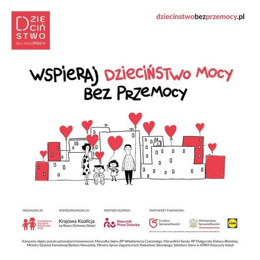
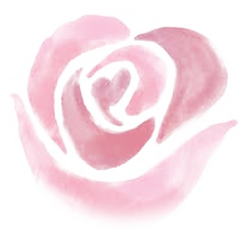
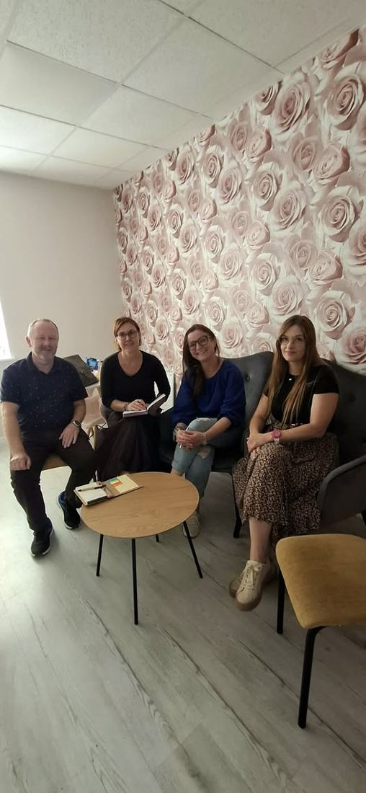
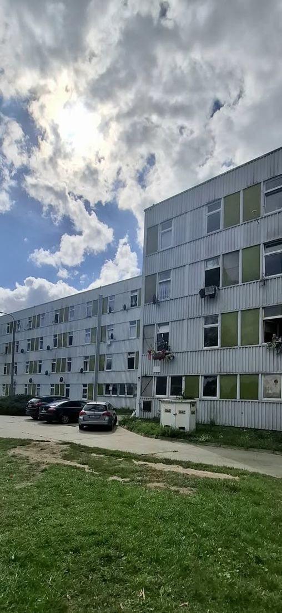
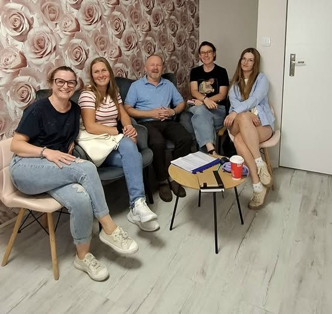
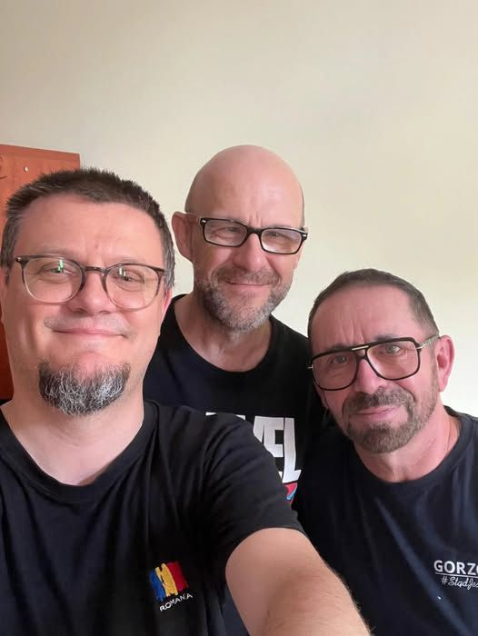

Bajka o „Ciepłym i puchatym”
Jak dzielić się ciepłem, żeby mnożyło radość. Zajęcia z osadzonymi w zakładzie karnym w ramach kampanii „Dzieciństwo bez przemocy”.

Gorzów Wielkopolski, ul. Wawrzyniaka 58
Działamy na rzecz włączenia społecznego osób i rodzin doświadczających kryzysów życiowych. Prowadzimy pracę środowiskową, diagnozy społeczne, konsultacje indywidualne i grupy samopomocowe.

Rosarium to miejsce, w którym z niepozornego, kolczastego krzaka, przy odpowiedniej trosce i mądrej opiece, wyrastają piękne kwiaty. Wierzymy, że przy właściwym wsparciu można tak samo odmienić życie ludzi i rodzin dotkniętych wykluczeniem.
Fundację założyła Dorota Sikorska, która od lat pomaga osobom w kryzysie w Gorzowie, m.in. jako prezes Fundacji Tomka Manikowskiego „Dogonić Marzenia” i członkini Gorzowskiej Rady Działalności Pożytku Publicznego w kadencji 2025-2028.
Pracujemy blisko ludzi, w ich środowisku, małymi krokami i razem z nimi.
Odwiedzamy mieszkańców w miejscu zamieszkania i rozmawiamy z nimi na miejscu. Docieramy do osób, które często same nie zgłaszają się po pomoc.
Potrzeby mieszkańców badamy razem z socjologami Akademii im. Jakuba z Paradyża, zanim zaplanujemy konkretne działania.
Rozmowy motywujące, pomoc w porządkowaniu spraw życiowych i towarzyszenie w zmianie.
Cotygodniowe spotkania, na których rozmawiamy o tym, co możemy dać innym: czas, obecność, uwagę i szacunek.
Uczestniczymy w kampanii Fundacji Dajemy Dzieciom Siłę: dzielimy się wiedzą o uważnym rodzicielstwie i prowadzimy zajęcia, także z osadzonymi w zakładzie karnym.
Jesteśmy w wykazie organizacji pomagających osobom doznającym przemocy, prowadzonym przez Wojewodę Lubuskiego.

Od 15 czerwca 2026 roku we współpracy z Miastem Gorzów Wielkopolski prowadzimy nasz pierwszy projekt: działania środowiskowe dla mieszkańców lokali przy ul. Złotego Smoka, dotkniętych uzależnieniem od alkoholu lub nim zagrożonych, oraz ich rodzin.
Jesteśmy na miejscu każdego tygodnia. Prowadzimy streetworking, rozmowy pomocowe, działania edukacyjne i wsparcie w sprawach życiowych. Pierwszym etapem była diagnoza społeczna z badaczami Akademii im. Jakuba z Paradyża.
Zadanie publiczne z zakresu zdrowia publicznego, współfinansowane ze środków Miasta Gorzowa Wielkopolskiego, realizowane od 15.06.2026 r. do 31.12.2026 r.
Na bieżąco piszemy o naszej pracy na Facebooku.

Jak dzielić się ciepłem, żeby mnożyło radość. Zajęcia z osadzonymi w zakładzie karnym w ramach kampanii „Dzieciństwo bez przemocy”.

Rozmawiamy o tym, co możemy dać innym, budujemy relacje i towarzyszymy w szukaniu drogi do zmiany.

Razem z badaczami Akademii im. Jakuba z Paradyża rozmawialiśmy z mieszkańcami ul. Złotego Smoka o ich potrzebach.
Jak zamiast „daj spokój, nic się nie stało” dać dziecku realne wsparcie.
Głównym punktem kampanii jest 19 listopada, Międzynarodowy Dzień Przeciwdziałania Przemocy wobec Dzieci.
Wspólny czas z mieszkańcami Złotego Smoka. Dziękujemy gościom z Urzędu i Rady Miasta.
Pierwszy projekt fundacji, realizowany we współpracy z Miastem Gorzów Wielkopolski.
Darowizna pomaga nam być na miejscu każdego tygodnia i towarzyszyć ludziom w wychodzeniu z kryzysu. Można też pomóc rzeczowo albo jako wolontariusz.
W sytuacji zagrożenia dzwoń pod numer 112.
Ogólnopolskie Pogotowie dla Ofiar Przemocy w Rodzinie „Niebieska Linia”: 800 120 002 (bezpłatnie, całą dobę).
Możesz też zadzwonić lub napisać do fundacji: 506 141 734, dorotasikorska73@gmail.com.
Statut, sprawozdania i polityki fundacji w jednym miejscu, dodawane na bieżąco.
Przejdź do dokumentów